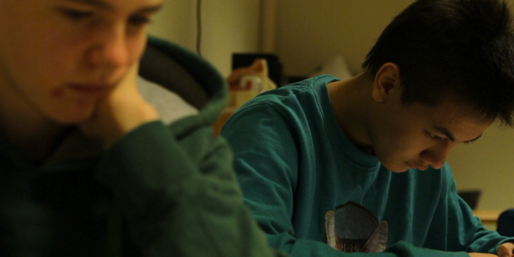

Brother
2015 // Short - Documentary

Details
- Made as part of a 3-month filmmaking residency.
- Funded by Creative Scotland.
- Currently in post-production
An observational documentary about what it is like to grow up in Skagaströnd, northern Iceland. The film tells the story of a group of teenagers as they deal with love, loneliness, school and Snapchat.
In Search of the Wallaby
2012 // Short - Documentary // 12:00
Festivals
- Edinburgh International Film Festival 2012
- Inverness Film Festival 2012
- Berlin British Shorts Film Festival 2013
In 2004 a wallaby was found dead on the Scottish isle of Islay; how it got there and how it died remains a mystery. A crack documentary team went with one single goal: to unearth the truth, only to discover there’s more to island life than they first expected.
Copyright 2015 Alasdair Bayne.